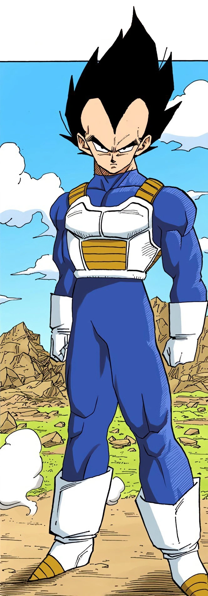

Vegeta (ベジータ Bejīta), more specifically Vegeta IV (ベジータ四世 Bejīta Yonsei), recognized as Prince Vegeta (ベジータ王子 Bejīta Ōji), is the prince of the fallen Saiyan race and the husband of Bulma, the father of Trunks and Bulla, the eldest son of King Vegeta, as well as one of the main characters of the Dragon Ball series.
Regal, egotistical, and full of pride, Vegeta was once a ruthless, cold-blooded warrior and outright killer,
but later abandoned his position in the Frieza Force for a peaceful life on Earth.
He would repeatedly fight alongside Universe 7's most powerful warriors in order to protect Earth and his family, as well as to surpass Goku in power.
Vegeta's strong character development has received high praise and is regarded as the biggest in the series.
He initially debuted as the main antagonist of the Vegeta Saga but progressed into a more anti-heroic tritagonist role for the rest of Dragon Ball Z.
Since the Majin Buu Saga and going into Dragon Ball Super, Vegeta has been the main deuteragonist/secondary protagonist behind Goku.
Vegeta is arrogant throughout the series and becomes bitter due to the abuse his race suffered at the hands of Frieza, as well as his injured pride due to repeatedly falling short compared to another Saiyan.
Following the destruction of his homeworld Planet Vegeta, his hatred toward Frieza grows.
His royalty seems to have bestowed upon him an inflated sense of superiority, holding himself above nearly everyone he encounters.
He is immensely proud of his Saiyan heritage and believes his race to be the most powerful in the universe.
Despite this, even as an antagonist, he did not act as an ordinary Saiyan, being even crueler and prideful thanks to Frieza's influence.
As the prince of a demolished Planet Vegeta, Vegeta is initially introduced as an unrepentant villain.
Judging from his evil intentions before joining the Z Fighters, Vegeta has been consistently characterized as extremely arrogant, vengeful, and at times, sadistic.
Many of Vegeta's early heroic acts are because of self-interest or revenge, although he later settles down and mellows out, adjusting to Earth as his home, raising a family with Bulma.
Having been born into the upper tier of Saiyan society, Vegeta was fixated on achieving the legendary status of Super Saiyan and becoming the most powerful warrior in the universe.
Vegeta is more of a tactical fighter who often rushes in the brawl without hesitation.
However, his rage or arrogance often causes him to underestimate his opponent and usually leads to his eventual defeat and sometimes death.
His royal blood and intense fighting style have both benefited and harmed him in many battles.
Vegeta has also been shown to be one of the more intelligent characters of the series, as well as one of the most serious, rarely exhibiting humor.
When he does so, his humor is often very dry and far darker than his fellow Z Fighters.
However, he does delight in mocking his enemies, as demonstrated when he offers to reconstruct Android 18 into a "toaster" or a "washing machine" (Funimation dub only).
He also shows his bleak sense of humor towards Goku when he was about to battle him in the World Martial Arts Tournament.
Aside from his bleaker sense of humor, he has also at times engaged in more sarcastic humor when gloating.
A notable example of this was when fighting Semi-Perfect Cell.
When Cell demanded to know how Vegeta was as strong as he was, Vegeta flippantly stated that he got that strong by "doing lots of push-ups and sit-ups, and [drinking] plenty of juice", as well as calling Kid Buu a "gifted speaker" when the latter barely responded at all just before the latter destroyed the Earth.
Normally, his massive ego and arrogance overshadow his positive qualities.
Despite his personality flaws, Vegeta is capable of respecting individuals, although he never outright states it often showing his respect nonverbally.
By the Majin Buu Saga, it is heavily implied that he and Piccolo were on civil terms and seemed to have mutual respect for one another.
He also expressed some grief over Gohan's fate at the hands of Buu himself.
Outside of these two instances, his relationship with the rest of the Dragon Team seemed cool at best.
Initially, Vegeta was extremely aggressive and cold-blooded.
Since his childhood, Vegeta had proven himself to be a ruthless killer, merciless like most Saiyans.
During the Namek Saga, however, he began to exhibit changes; rather than killing Krillin or Gohan as he promised in the previous saga, he instead forges an alliance with them.
Throughout the first half of the Frieza Saga, whomever he defeated, he killed without mercy.
His first sign of mercy was sparing Krillin and Bulma's lives in exchange for the Namekian Dragon Ball they were carrying when he could have easily killed them and taken it.
Another sign of mercy came when he encounters Gohan a short time later and knees him in the stomach instead of killing him, and again when he let Namekian Frog Captain Ginyu live, taking delight at the notion of Ginyu's being stuck in the frog's body as punishment enough and not wanting to get frog guts all over his boots.
After his defeat at the hands of Frieza, Vegeta tearfully explains to Goku that Frieza forced him to be ruthless and that he never had the chance to be anything else (implying that he could have been kinder and more merciful were it not for Frieza).
He used to have egocentric, condescending views towards races of what he believed inferior or not of a warrior class or whatever he had little use for, considered physical and emotional attachments to be meaningless, and admittedly had little care or use for children, though he would at times acknowledge Gohan's impressive power during the boy's childhood.
However, all these changes when he falls in love with Bulma and she bears him two half-Saiyan children.
After settling on Earth, Vegeta softened up and began to exhibit compassion for his family.
As a result of his love for Bulma and the birth of his children, Vegeta started to feel content settling down with a loving family while being a competitive warrior.
However, Vegeta secretly felt ashamed for sacrificing his goal of becoming the strongest warrior in the universe for the sake of his family and came to believe it was his attachment to them and the planet that rendered him weak compared to Goku, though he kept those thoughts hidden for a time.
On a similar note, largely because of his more cold-blooded and aggression, he initially had very little interest in avenging his race even after being made aware of rumors of Frieza having blown up their planet, even going as far as to say they deserved it due to being too weak, which notably shocked Nappa and Raditz when he admitted it.
Even after receiving confirmation via Dodoria about Frieza's involvement in the genocide, his main motivation in avenging himself against Frieza afterward was less the Saiyan genocide itself and more being placed under forced servitude by Frieza for most of his life as a result.
He seemed to have changed his tune later in life, as when confronting a revived Frieza, he makes clear that Frieza's genocide against his race is a major factor in why he refuses to rejoin him, and notably proceeded to attack Beerus in a rage after the latter admitted his role in causing the genocide to happen in the first place.
It was not until the Majin Buu Saga that Vegeta began to act upon his concealed feelings, first sparked by hearing of Goku's temporary return to the living world.
His obsession with overtaking and defeating Goku was once again ignited, but the repeated setbacks during the World Tournament by Shin and Babidi's conflict made him irritated that his fight was being unceremoniously postponed.
In addition, upon witnessing Goku's Super Saiyan 2 during his fight against Yakon, Vegeta's hopes were further dashed as he realized how useless his own tireless training was.
Desperation eventually consumes him to the point where he willingly allows Babidi to transform him into a Majin, claiming it is a return of his old "evil" self, though this was a desperate, failed ploy to restore his former wickedness, believing it to have been the source of his true power.
Goku believes Vegeta is bluffing, and correctly so; Vegeta demonstrates his prevailing softness in hugging Trunks for the first time and telling him that he is proud to be his father, before performing a sacrificial Final Explosion against Majin Buu.
It is when his family falls victim to Majin Buu that Vegeta finally understands the pain of losing a loved one and fully grasps the harm he has caused to so many people, and he comes to regret his many transgressions.
Since then, he has refrained from killing his opponents unless necessary and tries to be cautious of situations.